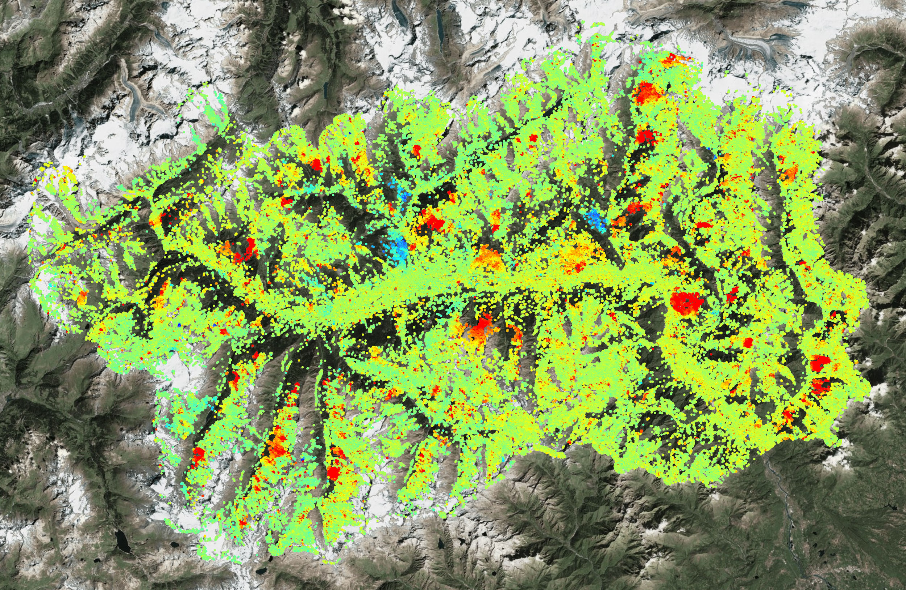
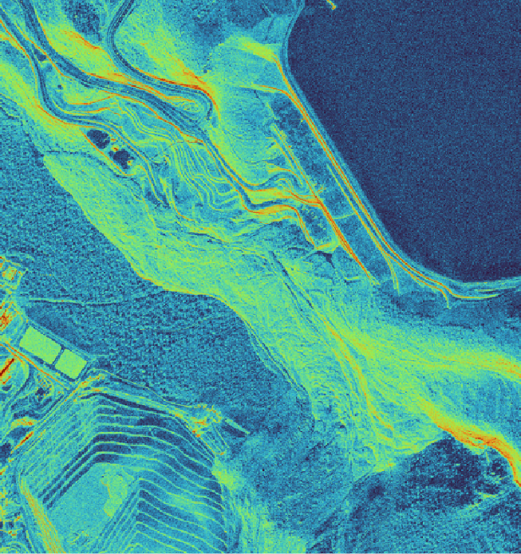
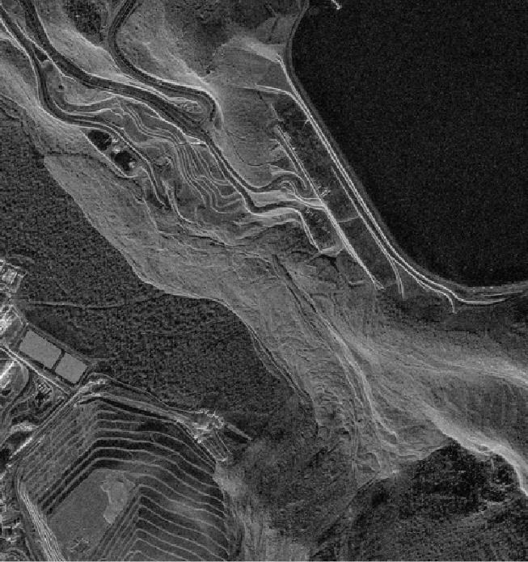
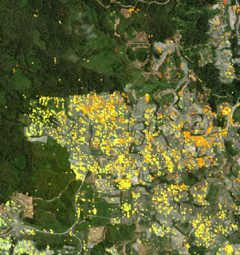
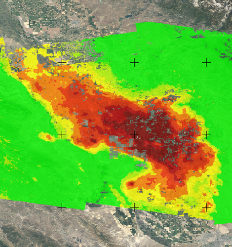
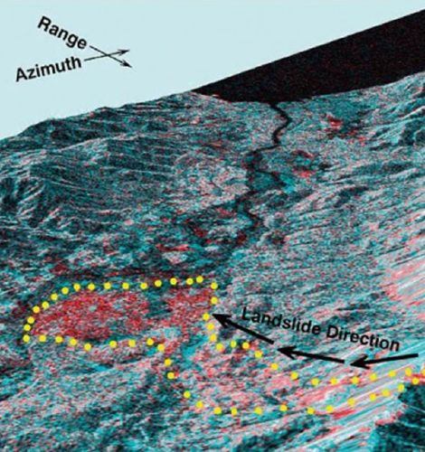

UZMASAT-1 APPLICATIONS
GROUND MOVEMENT
Consult Me Your Solutions Get Your Free Trial NowProtect your infrastructure and communities from the risks of ground displacement with Geospatial AI’s cutting edge monitoring solutions. Our ground displacement solution leverage geospatial analytics and satellite imagery to be at the forefront of ground movement analysis.
By understanding the factors driving ground displacement, we can identify potential risks, monitor for early warning signs and implement effective mitigation measures.



Early Warning, Risk Mitigation, and Disaster Management
Satellite Earth Observation (EO) provides crucial insights for early warning and disaster management. Using techniques like InSAR, it detects subtle ground deformations, helping industries like mining, oil & gas, and infrastructure mitigate risks such as subsidence or pipeline failures.
Additionally, EO enables rapid post-disaster assessments, aiding emergency response, insurance, and public infrastructure sectors in prioritizing relief efforts and streamlining recovery.
Cost-Effective Monitoring for Safety and Compliance
Satellite Earth Observation (EO) provides affordable, wide-area monitoring, reducing the need for ground-based surveys while ensuring consistent coverage. Industries like agriculture, urban development, and utilities use EO to track soil compaction and detect landslide risks, while sectors such as railways and highways rely on it for structural safety assessments and regulatory compliance.
Smart Planning and Predictive Insights
Proactive planning and decision-making are strengthened by identifying ground instability, benefiting urban planning, renewable energy, and infrastructure projects.
Real-time monitoring and predictive modeling help industries like oil & gas and smart cities address risks from activities such as underground extraction.
Additionally, AI-powered platforms like Uzma’s Asset.GAI enable automated analysis, providing actionable insights and identifying high-risk zones across various sectors.
Asset .GAI
Comprehensive Ground Displacement Monitoring Solutions
Asset.GAI’s advanced ground displacement solutions use geospatial analytics and satellite imagery to monitor ground deformation, subsidence, and landslide risks. Leveraging InSAR technology, time-series analysis, and slope stability assessments, Asset.GAI provides early warnings, identifies potential risks, and supports effective mitigation to protect infrastructure and communities.

Ground Deformation Monitoring
- Using InSAR technology
- Identify trends and potential risks

Subsidence Monitoring
- Detection areas of subsidence
- Evaluate the impacts

Landslide Risk Assessment
- Slope stability analysis
- Early warning systems